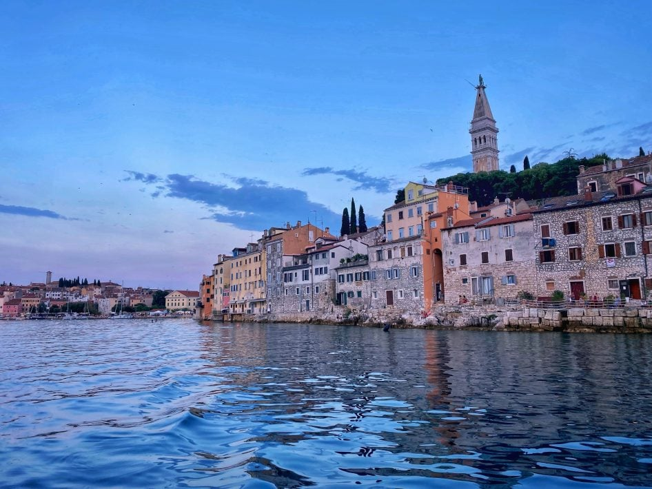

Néhány hely Erdőbényén és a szomszédságában, amit pihenés közben érdemes felfedezni.
Erdőbényei Tájház
Néprajz
Kézművesség

A Tájház 2008-ban nyitotta meg kapuit, berendezése a falu egykori lakóinak mindennapjait idézi. A gyűjteményben azoknak a mesterségeknek az eszközei sorakoznak, amelyek egykor a családok megélhetését adták: a kőfaragásé, a fafaragásé és a híres bényei kádármesterségé.
A kádárság a helyi bortermeléshez kötődött: a 18. századi vásári árlistákon a bodnárok már több mint harminc termékkel szerepeltek. A hagyomány nem szakadt meg, a mesterséget a faluban ma is gyakorolják, apáról fiúra szállt.
Szepsi Laczkó Máté református lelkész a mai Szlovákiához tartozó Szepsiben született. Őt tartják a tokaji aszú feltalálójának: 1630-ban elsőként írta le az aszúkészítés ma is használt eljárásának alapjait, 1631-ben pedig ő készítette az első aszúbort Lorántffy Zsuzsanna számára.
Az emlékház főépületének három kiállítótermében Erdőbénye és Szepsi értékeit ismerheti meg, a kádármesterségtől a szőlőművelésen át a présekig.
A település szívében álló Szent György-templom gótikus eredetű, építését 1332-ben kezdték meg. Az évszázadok során többször átépítették: a barokk belső az 1733-as felújítás után készült el.
A templom környékével együtt a településközpont műemlékileg védett, így egy rövid séta során az egykori mezőváros hangulata is megismerhető.
A szomszédos Tolcsván, a Bormúzeum és Borászati Kultúra Házában a szőlőművelés és a borkészítés régi eszközeit ismerheti meg. Az épület a környék barokk kúriái közé tartozik: évszázadokon át a Constantinus család, a 16. században Fogarasról érkezett görög kereskedők birtoka volt, akiknek a ház falán emléktábla állít emléket.
A földszinten a szőlészeti és borászati szerszámok, az emeleten időszaki kiállítások láthatók. 2014 óta itt található az Élő múlt című állandó fotókiállítás is, amely Tolcsva régi és mai arcát mutatja be.
A Boldogkőváralja fölé magasodó vár a középkori magyar várak egyik legépebben fennmaradt példája, oklevelek már 1280 körül említik. A sziklaormon álló várból a Hernád völgyére és a Zempléni-hegységre nyílik kilátás.
A vár története a környék nagy családjaihoz, az Amadékhoz és később a Drugethekhez kötődik, a falak között pedig ma is jól követhető az épület többszöri átalakítása.
A fesztivált 2009-ben hat borászat közös ötletelése hívta életre, azóta a helyi borászok nyár végi rendezvénye, amelynek idején az egész falu helyszínné válik: a pincék kertjeiben tokaji borok, vezetett kóstolók, szőlőhegyi séták, gasztronómia és koncertek várják a látogatókat. A programban irodalmi esték, gyerekprogramok és esti zenék is helyet kapnak.
2026-ban augusztus 13. és 16. között négy napon át tartott a rendezvény, a nyitónapon a Budaházy–Fekete Kúria kertjében üdvözlő borkóstolóval. A pincék a fesztivál ideje alatt bármikor felkereshetők egy pohár borra vagy egy kisebb falatra.